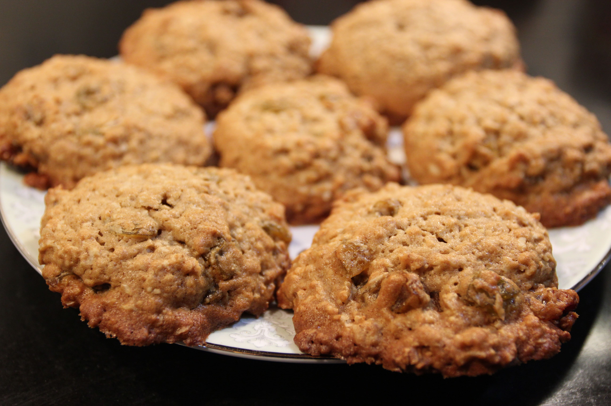
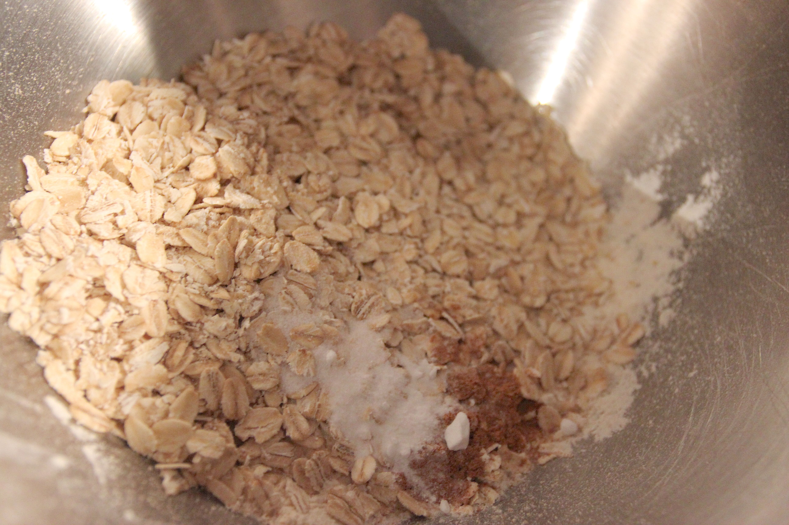
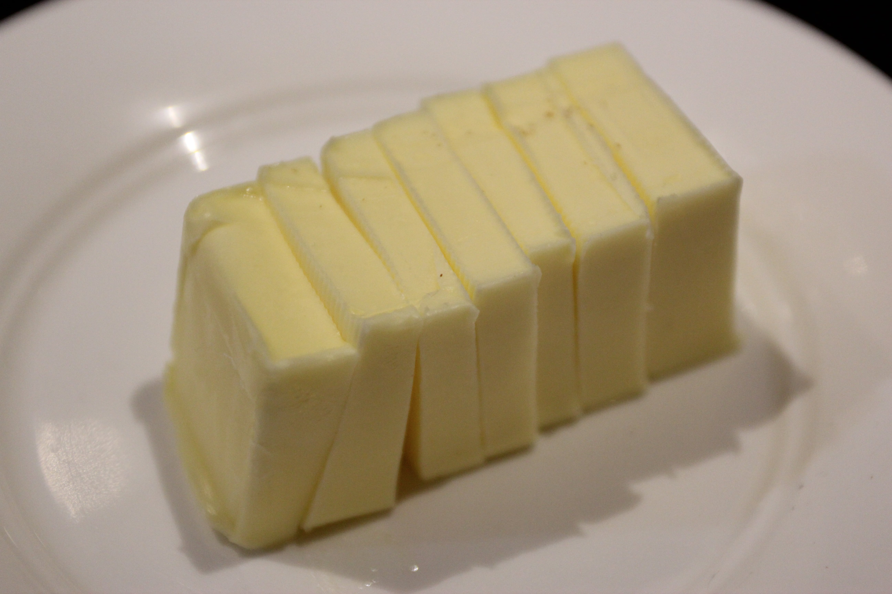
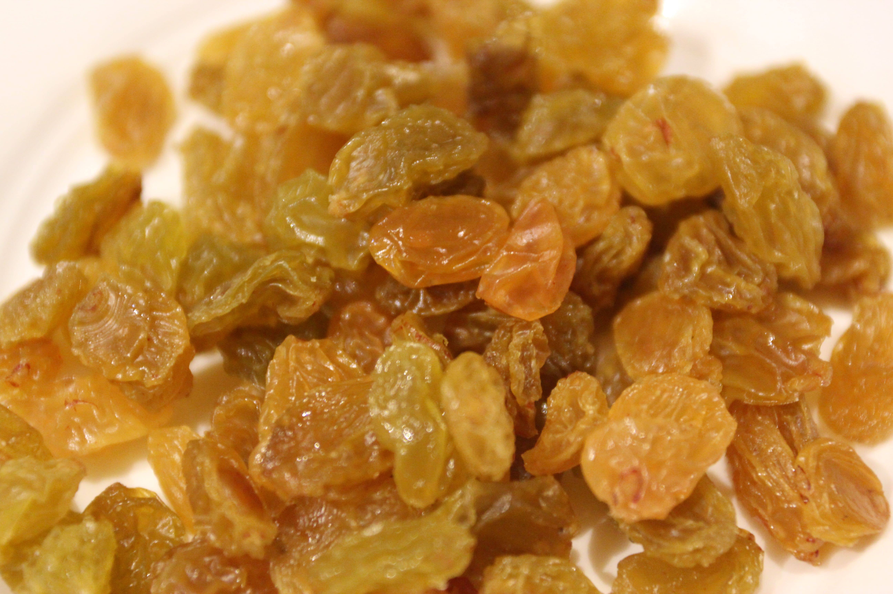
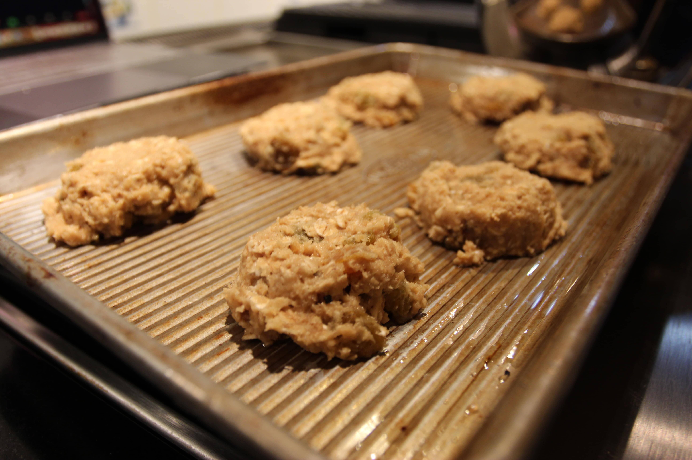
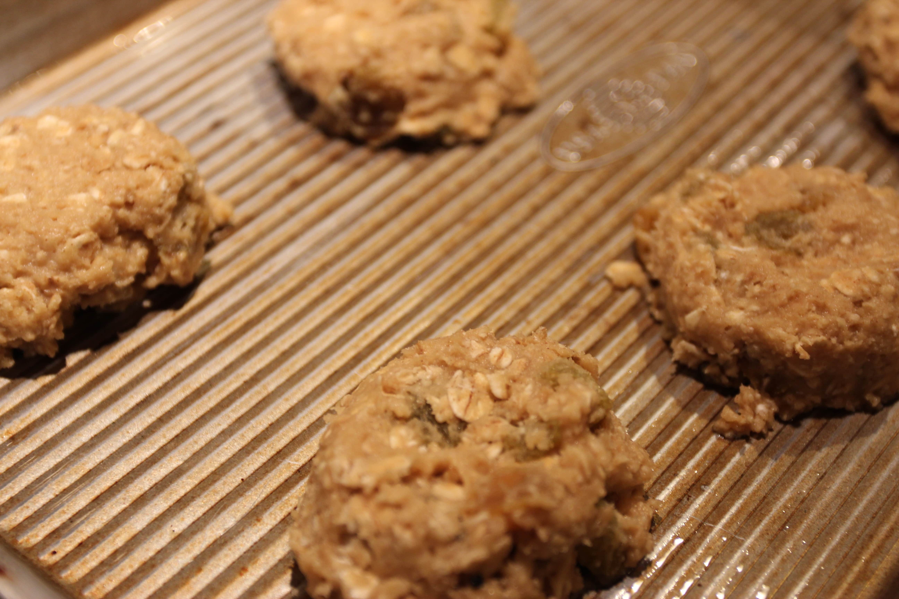

Oatmeal Raisin Cookies
 Effort: Medium45 mins (Prep), 20 mins (Bake)
Ingredients
Dry Ingredients
- 1 cup raisins (golden or dark)
- 1 cup all-purpose flour
- 1 ½ cup rolled oats
- Pinch of salt
- ½ teaspoon baking soda
- ½ teaspoon cinammon
- 1 stick (8 tablespoons) butter
Wet Ingredients
- 1 egg
- 1 teaspoon vanilla extract
- ½ cup maple syrup
Preparation
- Set butter out to reach room temperature.
- Preheat oven to 350 degrees Farenheit.
- Grease two baking pans with cooking oil (I used avocado oil) or line pans with parchment paper.
- Mix all dry ingredients (other than butter and raisins) at low speed (with paddle attachment for KitchenAid).
- Add in butter and wet ingredients and mix at high speed.
- Mix in raisins at low speed.
- Refrigerate mix for 20-30 mins.
- Use medium size ice cream scoop or spoon roughly two tablespoons large to scoop dough onto baking pans.
- Bake until golden brown and toothpick comes out clean (15-20 mins).




